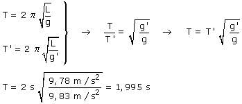
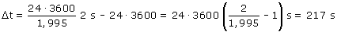

Calculamos el período del péndulo en el ecuador (T) y en el polo (T´)  En el polo una oscilación dura 1.995 s pero el reloj la contará como si durase dos segundos Durante un día, en el polo, el péndulo efectuará 24·3600/1.995 oscilaciones y cada una de ellas se contará como si durara 2 s. Entonces el adelanto por día será: 
|